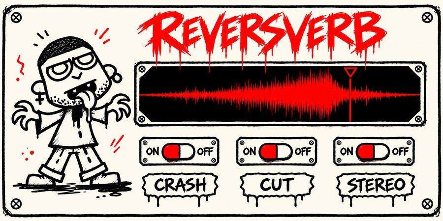
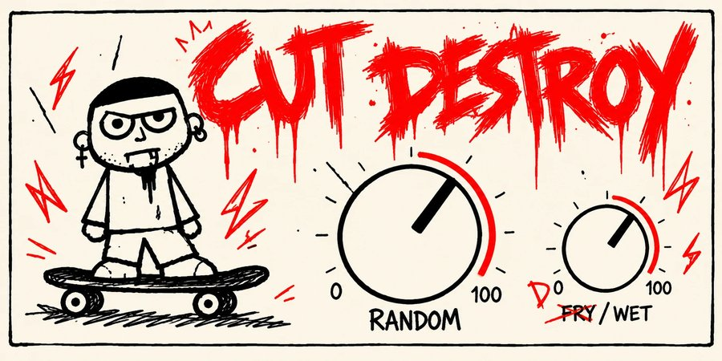
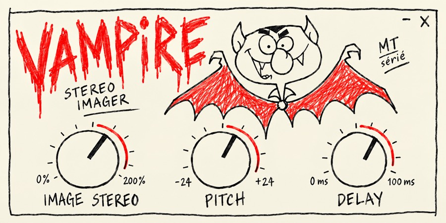
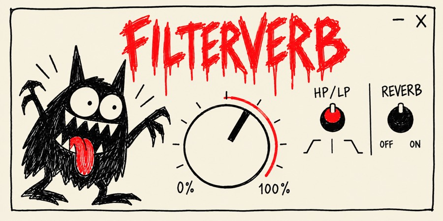
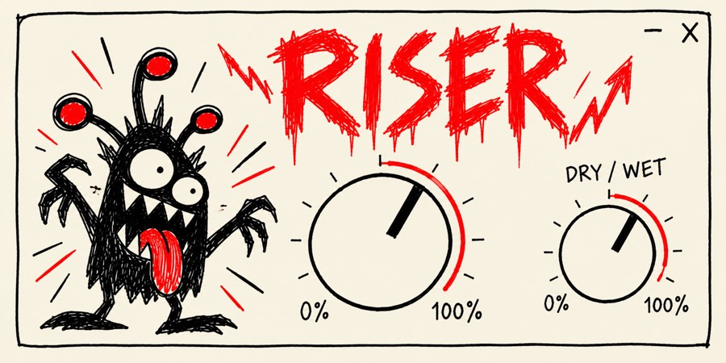

DIY · FREE
NEW






Audio plugins drawn by hand in Paris
71 Audio is a small plugin label started by a music producer who got tired of menus. Every plugin begins as a pencil drawing, gets one big knob, and does one thing loudly. Twelve of them are free right now, all in one app, including the new ReversVerb.
20%
Drag it up. The title above will notice.
New · Free · Mac & Windows
The 71 Audio app installs every plugin, keeps them up to date on its own, and puts you in the room with the community: presets, plugins made by members, the live chat, and me.
One click, for Mac or Windows. Free, no time limit.
You get a 6-digit code. No password to remember, ever.
Install every plugin in one place. New ones and updates show up on their own.
On a PC? Download for Windows
The app runs on a computer. Leave your email and I'll send you the link, so it's waiting for you tonight in the studio.
Plugins and the app update themselves. No more digging for the right installer.
Every new monster lands in the app before anywhere else.
Presets and plugins shared by members, checked by me before they go live.
The live chat, my videos, and what's coming next.
Yes. The app and every plugin are free, forever. No subscription, no trial.
Just your email. You get a code to sign in, no password.
No: the app is now the only way to get them. It's free, it only takes your email, and it keeps every plugin up to date for you.
Both. On Mac, the app is signed and checked by Apple, so it opens like any other app.
New · FreeThe one everybody asked for
Your 808 sounds huge in the studio and disappears on a phone. Phone Bass fixes that with one knob: it adds the harmonics a tiny speaker can play, so your sub is heard everywhere.
One knob. Turn it up until the bass shows up on a phone.
PHONE TEST button: hear your mix through a phone speaker, then flip BYPASS to compare.
Your original sub is never touched, and it never clips.
Each plugin started as a pencil drawing, and the drawing is the interface. One knob does the damage and a DRY/WET knob reins it in. The free app installs all of them, each one as its own plugin in your DAW.
71 Rack is just one of the 12 plugins in the app. You don't need it to use the others: every plugin also shows up on its own in your DAW.
Drop any module into six slots, reorder them by dragging, and let three tempo-locked LFOs move the knobs for you.
Three LFOs synced to the song. Drag an LFO onto any knob, switch or slot mix to assign it.
Reorder the chain while it plays. Tails and live state move with the module, with no clicks.
Every slot has its own power switch and mix knob.
Try it: drag the slots to reorder, click one to switch it on or off.
I'm Matt, a producer from Paris. I make these plugins for my own tracks first: if a tool makes a session faster or weirder, it ends up here. Bug reports, ideas or a monster you want drawn next, write to me.
contact@71audio.com
“Every plugin here started on paper. If a drawing makes me laugh, it becomes a plugin.”
Matt Tosi, producer & founder